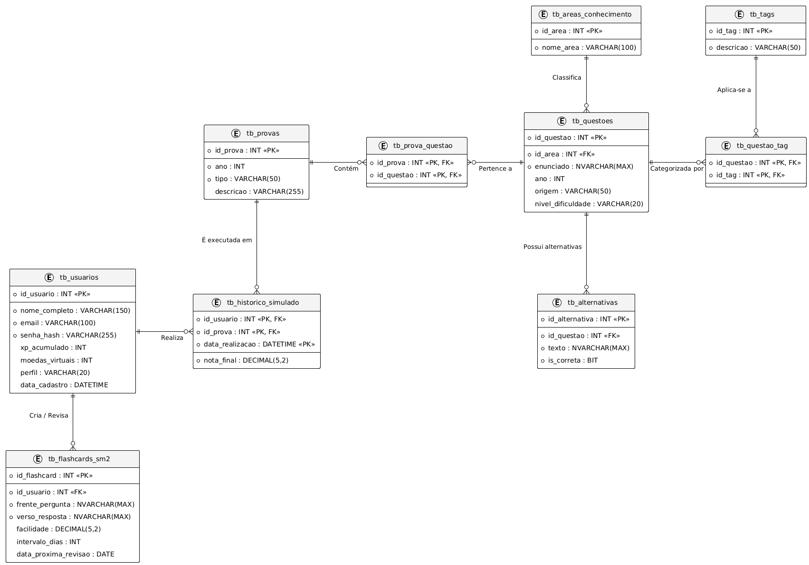
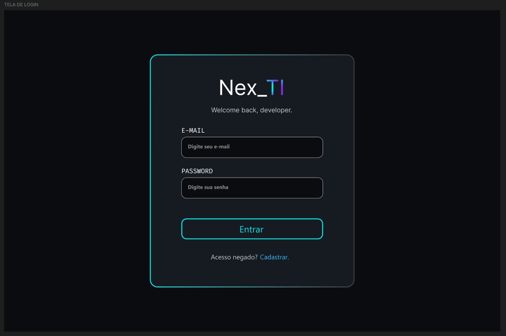
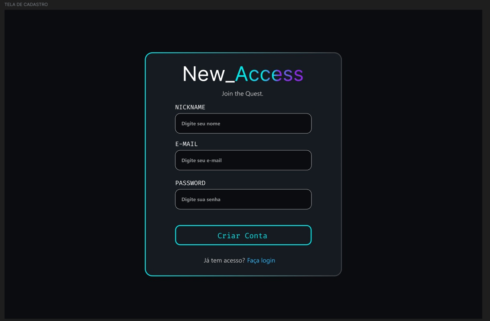
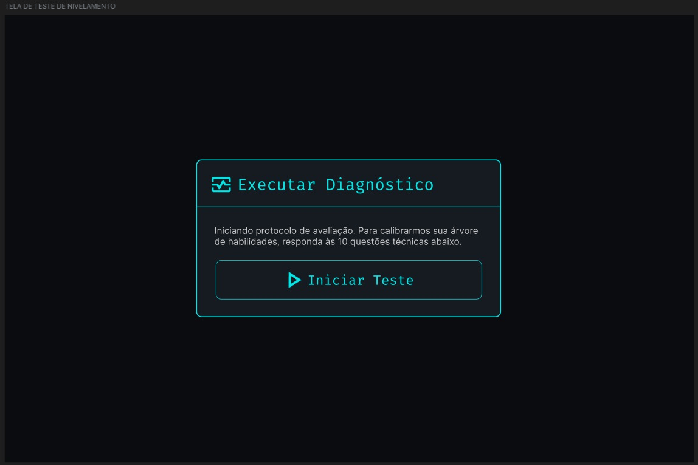

1 INTRODUÇÃO
A digitalização do ambiente corporativo e educacional tem exigido das empresas a criação de plataformas robustas e orientadas a dados. A necessidade de treinamento contínuo impulsiona o desenvolvimento de sistemas que maximizem a curva de aprendizado. Segundo Pressman e Maxim (2016), a engenharia de software contemporânea deve focar na entrega de valor iterativo ao utilizador, justificando a adoção de métodos ágeis neste projeto.
Neste cenário de transformação digital, estudantes de áreas técnicas enfrentam frequentemente o desafio da retenção de conhecimento a longo prazo. A plataforma Nex_TI surge como uma solução baseada em EdTech, utilizando a gamificação e a técnica de flashcards para otimizar o processo de aprendizagem ativa. Ao invés de um modelo de ensino estritamente passivo, o sistema propõe uma interação contínua, onde o aluno é avaliado e recompensado de acordo com o seu progresso real.
Para solucionar o problema da "curva de esquecimento", este projeto integra algoritmos de repetição espaçada (Spaced Repetition System - SRS), especificamente o modelo matemático SM-2, que calcula dinamicamente o intervalo ideal para a revisão de cada conceito. Aliado a isso, a arquitetura gamificada distribui pontos de experiência (XP) e moedas virtuais, criando um ambiente de reforço psicológico positivo que estimula o engajamento diário e a conclusão das trilhas de estudo.
Este documento apresenta a especificação técnica detalhada da plataforma Nex_TI. Ao longo do relatório, serão abordados desde a engenharia de requisitos e metodologias ágeis aplicadas, até a modelagem avançada do banco de dados relacional (SQL Server) e a arquitetura orientada a objetos (C#). A interface documentada foi concebida sob a ótica de usabilidade para navegadores web e HTML semântico, garantindo acessibilidade e uma experiência de usuário (UX) fundamentada em testes de heurísticas consolidadas pelo mercado.
A relevância acadêmica e profissional deste PIM reside na integração multidisciplinar de conceitos de gestão, programação e design. Através da estruturação de um MVP (Mínimo Produto Viável), a equipe demonstra a viabilidade de uma ferramenta que une a teoria educacional à tecnologia de ponta, preparando as bases para uma implementação escalável em nuvem e integrável a modelos de inteligência artificial nos próximos estágios do desenvolvimento.
1.1 Objetivo Geral
O objetivo geral deste projeto é documentar e desenhar os fluxos de interação de uma plataforma web focada no engajamento por meio de métodos ativos, oferecendo uma arquitetura escalável e protótipos de alta fidelidade que permitam validar o gerenciamento de acessos e o processamento visual de métricas baseadas em algoritmos de repetição espaçada.
1.2 Objetivos Específicos
- Definir a arquitetura da aplicação e suas respectivas regras de negócio baseadas em gamificação.
- Implementar metodologias ágeis para controle de rastreabilidade e gestão fluida do ciclo de vida do software.
- Modelar a estrutura de dados relacional e implementar a lógica do sistema via Programação Orientada a Objetos em C#.
- Construir interfaces aplicando Affordance, Pregnância da Forma e as Heurísticas de Nielsen, com uso de HTML Semântico e CSS Flexbox/Grid.
- Assegurar a conformidade com a LGPD (Lei Geral de Proteção de Dados), garantindo o tratamento seguro, criptografado e transparente das informações dos usuários, coletando apenas dados essenciais para a operação do sistema.
1.3 Contextualização do Projeto
A concepção tecnológica da plataforma Nex_TI foi diretamente influenciada por modelos de arquitetura de sucesso no mercado educacional. Plataformas de ensino corporativo comprovaram que a organização em trilhas estruturadas aumenta o índice de conclusão dos treinamentos (ALURA, 2026). Ambientes de capacitação independentes também atestam a eficácia da imersão direta em conteúdo técnico (CURSO.DEV, 2026). O sistema proposto eleva esse padrão ao planejar uma camada de gamificação e lógicas de retenção baseadas na mecânica matemática do software ANKI (2026), transformando o fluxo de estudo em uma jornada avaliativa e metrificável.
2 DESENVOLVIMENTO
2.1 Etapa 1 – Definição e caracterização do negócio fictício
A Nex_TI atua como uma empresa fictícia de tecnologia no setor educacional idealizando um software web responsivo sob o modelo Software as a Service. O modelo de negócio busca solucionar o abandono de cursos de capacitação técnica, um desafio validado por grandes corporações educacionais (ALURA, 2026). O projeto foca na entrega de valor através de um painel visual de indicadores que quantificará a evolução do aprendizado em pontos de experiência, permitindo análises gerenciais rigorosas sobre a proficiência e dedicação do colaborador.
2.1.1 Regras de Negócio
Para balizar a modelagem dos protótipos de alta fidelidade e a integridade sistêmica da gamificação, o escopo documentado rege-se pelas seguintes regras de negócio fundamentais:
- RN01 - Atribuição de Recompensas: O usuário apenas receberá a bonificação em pontos de experiência e moedas virtuais após a conclusão integral e validação de um módulo de flashcards no sistema final.
- RN02 - Níveis de Acesso: O sistema possuirá perfis estritos. O Administrador terá privilégios totais, o Tutor realizará a criação de conteúdo, e o Aluno atuará exclusivamente no consumo do conhecimento.
- RN03 - Economia Virtual: As moedas mapeadas no sistema serão vinculadas a um identificador único de sessão e servirão estritamente para a liberação de módulos de conteúdo bloqueados na loja de recompensas.
2.2 Etapa 2 – Engenharia de Software Ágil Aplicada
A gestão da análise da aplicação foi conduzida através das metodologias Scrum e Kanban. A adoção irrestrita das cerimônias ágeis descritas por Schwaber e Sutherland (2020) garantiu o alinhamento tático da equipe no levantamento de requisitos. Este controle processual assegura a rastreabilidade absoluta das regras de negócio, atendendo às exigências fundamentais de qualidade e maturidade de desenvolvimento de software estipuladas pelo guia MPS.BR (SOFTEX, 2021).
2.2.1 Requisitos Funcionais e Não Funcionais
O escopo da plataforma foi detalhado em requisitos críticos. Para atender rigorosamente às boas práticas da Engenharia de Software, realizou-se a separação do que compõe o Mínimo Produto Viável (MVP) entregue de imediato no escopo deste semestre, e o que compreende o roadmap de implementação futura.
A) Requisitos Implementados de Imediato (MVP - PIM III):
- RF01: Gestão de Autenticação e Perfis para o controle de sessão de usuários (Aluno, Tutor e Admin).
- RF02: Motor de Repetição Espaçada operando sob a lógica algorítmica SM-2 para definir os intervalos de dias.
- RF03: Interface de Estudo Ativo apresentando flashcards de frente e verso dinâmicos e interativos.
- RF04: Criação de Flashcards (CRUD completo) gerenciado pelo usuário na plataforma.
- RF06: Sistema de Gamificação (distribuição de XP para recompensar o aluno e gerar classificação visual).
- RNF01: Arquitetura operando provisoriamente em ambiente front-end e repositório via GitHub Pages.
- RNF02: Persistência de dados imediata no cliente web utilizando LocalStorage.
- RNF03: Responsividade seguindo restritamente os critérios de design fluido e Flexbox.
- RNF04: Acessibilidade Universal com modos de contraste e suporte para leitores de tela nativo (WAI-ARIA).
B) Requisitos para Implementação Futura (Próximos Semestres):
- RF05: Módulo Preparatório Acadêmico contendo avaliações complexas de múltipla escolha.
- RF07: Economia Virtual viabilizando o desbloqueio de conteúdo extra na loja integrada.
- RF08: Dashboard gerencial avançado para a visualização de métricas detalhadas de retenção de conhecimento.
- RF09: Suporte Integrado de Chat e inteligência artificial para geração de resumos baseados nos cards.
- RNF07: Migração da arquitetura para back-end robusto integrado em Node.js e C#, banco SQL Server em nuvem e autenticação por JSON Web Token (JWT).
2.2.2 Product Backlog e Épicos
O levantamento de requisitos foi fragmentado em histórias de usuário estimadas utilizando a sequência de Fibonacci para mensurar o nível de esforço analítico e de prototipagem das interfaces. O backlog do produto foi distribuído em oito épicos lógicos essenciais.
- Épico 1 (Autenticação e Acesso): Estruturação visual de formulários e mapeamento de sessões.
- Épico 2 (Nivelamento do Usuário): Desenho dos fluxos de avaliação estática inicial para definição de nível acadêmico de ingresso do aluno.
- Épico 3 (Flashcards e Economia): Planejamento da arquitetura do motor SM-2 para reger o fluxo temporal das revisões, avaliado em treze pontos de esforço analítico devido ao rigor lógico necessário para a futura programação.
- Épico 4 (Progressão): Prototipagem das regras condicionais de desbloqueio de conteúdo atreladas à contagem visual de moedas virtuais.
- Épico 5 (Suporte Integrado): Estruturação conceitual para comunicação com modelos de inteligência artificial de larga escala, sendo um épico estritamente teórico nesta etapa.
- Épico 6 (Gestão): Mapeamento das telas exclusivas para perfis administrativos e controle global de conteúdo.
- Épico 7 (Preparatório): Prototipagem de questionários baseados na estrutura de avaliação nacional.
- Épico 8 (Acessibilidade e Inclusão): Disposição visual de componentes retráteis contendo indicativos de redimensionamento e preferências cromáticas.
2.2.3 Gestão Visual e Quadro Kanban
Para assegurar o cumprimento dos prazos estipulados e o alinhamento da equipe, o controle tático das tarefas foi centralizado na plataforma Trello. O fluxo de trabalho foi estruturado com base nos artefatos do Scrum, dividindo os processos em colunas de apoio, planejamento e execução direta (Sprint Backlog, Doing, Sprint Review e Done).
A Figura 1 demonstra o registro da primeira metade do quadro Kanban gerido pelos discentes, evidenciando a base de referências, eventos e o carregamento do Backlog do Produto e da Sprint atual.
Figura 1 – Quadro Kanban no Trello: Referências, Eventos e Backlog

Fonte: Criado pelos autores, 2026.
Dando continuidade à visualização da gestão ágil, a Figura 2 apresenta a esteira de execução técnica do projeto, ilustrando o fluxo de tarefas ativas, o ambiente de revisão de qualidade (QA) e os itens definitivamente concluídos e prontos para a submissão avaliativa.
Figura 2 – Quadro Kanban no Trello: Execução, Revisão e Conclusão

Fonte: Criado pelos autores, 2026.
2.3 Etapa 3 – Modelagem de Banco de Dados e NoSQL
A modelagem de dados do sistema funde o ambiente de gamificação da plataforma Nex_TI com a robustez de um banco de questões preparado para testes e simulados acadêmicos (padrão ENADE), seguindo a estrutura sugerida em orientação docente.
O modelo lógico foi desenhado para o SGBD SQL Server (ELMASRI; NAVATHE, 2011), garantindo integridade referencial, segurança de dados em conformidade com a LGPD (BRASIL, 2018) através de campos ofuscados (Hash), e suporte total à lógica algorítmica de repetição espaçada SM-2.
Dicionário de Dados
| Tabela | Atributos / Campos | Descrição |
|---|---|---|
| tb_usuarios | id_usuario (PK), nome_completo, email, senha_hash, xp_acumulado, moedas_virtuais, perfil | Armazena dados de acesso e métricas de gamificação. Entidade central da Nex_TI. |
| tb_flashcards_sm2 | id_flashcard (PK), id_usuario (FK), frente_pergunta, verso_resposta, facilidade, intervalo_dias, data_proxima_revisao | Motor de repetição espaçada. Armazena os cartões criados pelo usuário e o status de revisão. |
| tb_questoes | id_questao (PK), id_area (FK), enunciado, ano, origem (Enem/Enade), nivel_dificuldade | Armazena o enunciado e metadados da questão de simulado. |
| tb_alternativas | id_alternativa (PK), id_questao (FK), texto, is_correta (boolean) | Cada questão terá várias alternativas, com indicação exata da correta. |
| tb_areas_conhecimento | id_area (PK), nome_area | Classificação macro. Ex.: Banco de Dados, Sistemas, Redes. |
| tb_provas | id_prova (PK), ano, tipo (Enem/Enade), descricao | Representa uma prova ou simulado específico a ser realizado pelo aluno. |
Descrição da Estrutura do DER
O banco de dados para o sistema apresenta as seguintes relações entre as tabelas:
- Questao → Alternativa 1:N (Uma questão tem várias alternativas de resposta).
- AreaConhecimento → Questao 1:N (Uma área possui várias questões).
- Questao ↔ Tag N:N (Uma questão pode ter várias tags e vice-versa, gerando a tabela associativa tb_questao_tag).
- Prova ↔ Questao N:N (Uma prova contém várias questões e uma questão aparece em várias provas, gerando a tabela tb_prova_questao).
- Usuario ↔ Prova N:N (O Aluno executa diversas provas ao longo do tempo, gerando a tabela tb_historico_simulado para registar a conclusão e atribuir XP).
- Usuario → Flashcard 1:N (Um usuário possui e estuda diversos cartões dinâmicos vinculados à sua conta).
Justifica-se a escolha técnica do tipo NVARCHAR(MAX) para campos textuais das cartas e questões, pois garante amplo suporte à codificação Unicode (símbolos matemáticos e blocos de código nativos), evitando corrupção de dados ao migrar entre sistemas operacionais.
Figura 3 – Diagrama de Entidade-Relacionamento (DER) do Sistema

Fonte: Criado pelos autores, 2026.
Modelo Físico (Script DDL)
A implementação da DDL apresentada a seguir respeita a hierarquia relacional, criando inicialmente as tabelas fortes para mitigar erros de dependência estrutural.
Quadro 1 – Script DDL: Criação do Banco e Tabelas Principais (SQL Server)
CREATE DATABASE db_nexti;
GO
USE db_nexti;
GO
-- Tabelas Principais (Sem dependências)
CREATE TABLE tb_usuarios (
id_usuario INT IDENTITY(1,1) PRIMARY KEY,
nome_completo VARCHAR(150) NOT NULL,
email VARCHAR(100) UNIQUE NOT NULL,
senha_hash VARCHAR(255) NOT NULL,
xp_acumulado INT DEFAULT 0,
moedas_virtuais INT DEFAULT 0,
perfil VARCHAR(20) DEFAULT 'Aluno',
data_cadastro DATETIME DEFAULT GETDATE()
);
CREATE TABLE tb_areas_conhecimento (
id_area INT IDENTITY(1,1) PRIMARY KEY,
nome_area VARCHAR(100) NOT NULL
);
CREATE TABLE tb_tags (
id_tag INT IDENTITY(1,1) PRIMARY KEY,
descricao VARCHAR(50) UNIQUE NOT NULL
);
CREATE TABLE tb_provas (
id_prova INT IDENTITY(1,1) PRIMARY KEY,
ano INT NOT NULL,
tipo VARCHAR(50) NOT NULL,
descricao VARCHAR(255)
);Fonte: Criado pelos autores, 2026.
Na sequência, são geradas as entidades dependentes e as tabelas associativas, declarando restrições de deleção em cascata (ON DELETE CASCADE) em entidades fracas como as opções do gabarito (Alternativas).
Quadro 2 – Script DDL: Tabelas Filhas e Associativas (SQL Server)
-- Tabelas Filhas e Motor SM-2
CREATE TABLE tb_flashcards_sm2 (
id_flashcard INT IDENTITY(1,1) PRIMARY KEY,
id_usuario INT NOT NULL,
frente_pergunta NVARCHAR(MAX) NOT NULL,
verso_resposta NVARCHAR(MAX) NOT NULL,
facilidade DECIMAL(5,2) DEFAULT 2.5,
intervalo_dias INT DEFAULT 0,
data_proxima_revisao DATE DEFAULT GETDATE(),
CONSTRAINT FK_Flashcard_Usuario FOREIGN KEY (id_usuario)
REFERENCES tb_usuarios(id_usuario)
);
CREATE TABLE tb_questoes (
id_questao INT IDENTITY(1,1) PRIMARY KEY,
id_area INT NOT NULL,
enunciado NVARCHAR(MAX) NOT NULL,
ano INT, origem VARCHAR(50), nivel_dificuldade VARCHAR(20),
CONSTRAINT FK_Questao_Area FOREIGN KEY (id_area)
REFERENCES tb_areas_conhecimento(id_area)
);
CREATE TABLE tb_alternativas (
id_alternativa INT IDENTITY(1,1) PRIMARY KEY,
id_questao INT NOT NULL,
texto NVARCHAR(MAX) NOT NULL,
is_correta BIT NOT NULL,
CONSTRAINT FK_Alt_Questao FOREIGN KEY (id_questao)
REFERENCES tb_questoes(id_questao) ON DELETE CASCADE
);
-- Tabelas Associativas e Transacionais
CREATE TABLE tb_questao_tag (
id_questao INT NOT NULL, id_tag INT NOT NULL,
PRIMARY KEY (id_questao, id_tag),
CONSTRAINT FK_QT_Q FOREIGN KEY (id_questao) REFERENCES tb_questoes(id_questao),
CONSTRAINT FK_QT_T FOREIGN KEY (id_tag) REFERENCES tb_tags(id_tag)
);
CREATE TABLE tb_prova_questao (
id_prova INT NOT NULL, id_questao INT NOT NULL,
PRIMARY KEY (id_prova, id_questao),
CONSTRAINT FK_PQ_P FOREIGN KEY (id_prova) REFERENCES tb_provas(id_prova),
CONSTRAINT FK_PQ_Q FOREIGN KEY (id_questao) REFERENCES tb_questoes(id_questao)
);
CREATE TABLE tb_historico_simulado (
id_usuario INT NOT NULL, id_prova INT NOT NULL,
nota_final DECIMAL(5,2) NOT NULL,
data_realizacao DATETIME DEFAULT GETDATE(),
PRIMARY KEY (id_usuario, id_prova, data_realizacao),
CONSTRAINT FK_HS_User FOREIGN KEY (id_usuario) REFERENCES tb_usuarios(id_usuario),
CONSTRAINT FK_HS_Prova FOREIGN KEY (id_prova) REFERENCES tb_provas(id_prova)
);Fonte: Criado pelos autores, 2026.
2.4 Etapa 4 – Desenvolvimento do sistema com POO (C#)
A arquitetura de desenvolvimento do Back-end utilizou o paradigma de Programação Orientada a Objetos (POO) através da linguagem C# e da plataforma .NET 10. O sistema aplica rigorosamente os quatro pilares da POO: Abstração, Encapsulamento, Herança e Polimorfismo, garantindo proteção de dados e facilidade de manutenção (PRESSMAN; MAXIM, 2016).
A classe base do sistema é a Usuario, que encapsula os atributos primários de autenticação (Id, Nome, Email, Senha) e abstrai o método de Login() para todos os atores da plataforma.
Quadro 3 – Classes Usuario.cs e Admin.cs em C#
using System;
namespace PIM_III {
public class Usuario {
public int Id { get; set; }
public string Nome { get; set; }
public string Email { get; set; }
public string Senha { get; set; }
public Usuario(int id, string nome, string email, string senha) {
Id = id; Nome = nome; Email = email; Senha = senha;
}
public void Login() {
Console.WriteLine("Usuário logado com sucesso!");
}
}
internal class Admin : Usuario {
public Admin(int id, string nome, string email, string senha)
: base(id, nome, email, senha) {}
public void gerenciarAcesso() {
Console.WriteLine("Gerenciando acesso...");
}
}
}Fonte: Criado pelos autores, 2026.
A partir da superclasse Usuario, aplicamos o conceito de Herança para derivar perfis com níveis de acesso estritos. Além do Administrador, temos o perfil Tutor, responsável por gerenciar conteúdo e acompanhar o desempenho. A entidade central da plataforma é a classe Aluno, que para além de herdar de Usuário, utiliza o princípio de Composição associando-se às classes de Gamificação (XP, Moedas, Desempenho e Simulado).
Quadro 4 – Classes Aluno.cs e Tutor.cs (Herança e Composição)
using System.Collections.Generic;
namespace PIM_III {
internal class Tutor : Usuario {
public Tutor(int id, string n, string e, string s) : base(id,n,e,s) {}
public void acompanharDesempenho() { Console.WriteLine("Acompanhando..."); }
public void gerenciarConteudo() { Console.WriteLine("Gerenciando..."); }
}
internal class Aluno : Usuario {
public Simulado Simulado { get; set; }
public Desempenho Desempenho { get; set; }
public XP XP { get; set; }
public Moedas Moedas { get; set; }
public Acessibilidade Acessibilidade { get; set; }
public List Duvidas { get; set; }
public Aluno(int id, string n, string e, string s) : base(id, n, e, s) {
Duvidas = new List();
}
public void EstudarFlashCard() { Console.WriteLine("Estudando Flashcard..."); }
public void RealizarSimulado() { Console.WriteLine("Fazendo simulado..."); }
public void VisualizarProgresso() { Console.WriteLine("Visualizando..."); }
}
} Fonte: Criado pelos autores, 2026.
As classes complementares encapsulam atributos numéricos vitais para a economia virtual e acessibilidade, enquanto a classe Program atua como o ponto de inicialização e instanciação (Main) do software.
Quadro 5 – Classes Auxiliares e Program.cs
namespace PIM_III {
internal class XP { public int Pontos { get; set; } }
internal class Moedas { public int Quantidade { get; set; } }
internal class Desempenho { public float Progresso { get; set; } }
internal class Simulado { public int Id { get; set; } public float Nota { get; set; } }
internal class Duvidas { public string Descricao { get; set; } }
internal class Acessibilidade { public string Modo { get; set; } }
}
// Arquivo de Execução Principal
using System;
using PIM_III;
public class Program {
public static void Main(string[] args) {
Console.WriteLine("---PIM_III---");
Console.WriteLine("Seja bem vindo");
// Instanciação com parâmetros exigidos pelo construtor
Usuario u = new Usuario(1, "Aluno Padrão", "aluno@nexti.com", "senha123");
u.Login();
}
}Fonte: Criado pelos autores, 2026.
2.5 Etapa 5 – Desenvolvimento Web Responsivo
No escopo do presente semestre, a camada de apresentação (Front-end) foi desenvolvida utilizando HTML5 estruturado e semântico. O uso genérico de elementos div foi substituído no mapeamento arquitetural por tags precisas da W3C, tais como header, main, section, article e nav, garantindo otimização lógica para motores de busca e acessibilidade (ISO/IEC, 2011).
A estratégia adotada no design baseou-se na responsividade fluida para múltiplos tamanhos de tela. A estruturação previu o uso do Flexbox para alinhamentos transversais do painel principal e CSS Grid Layout para a montagem dos painéis de login. Toda a responsividade projetada é operada de forma limpa por Media Queries nativas que reordenam dinamicamente a interface sem uso de bibliotecas de terceiros.
Quadro 6 – Estratégia de Responsividade e Semântica (Front-end)
| Tecnologia / Conceito | Aplicação Prática no Projeto (Nex_TI) |
|---|---|
| Design Responsivo (Media Queries) | O CSS global foi projetado inicialmente para as dimensões de Desktop. As regras para telas menores (smartphones e tablets) foram aplicadas posteriormente através de @media queries, garantindo a adequação em dispositivos móveis. |
| CSS Flexbox | Utilizado para o alinhamento unidimensional (linhas ou colunas) dos elementos internos, como a barra de navegação (Header) e o alinhamento centralizado dos Flashcards de estudo. |
| CSS Grid Layout | Aplicado no design macro da aplicação, especificamente na estruturação das telas de Login e Dashboard, permitindo a divisão precisa da tela em áreas de conteúdo e painéis laterais. |
| HTML5 Semântico | Substituição de blocos genéricos (<div>) por tags estruturais com significado (<main>, <section>, <article>, <header>, <nav>), melhorando o ranqueamento SEO e a leitura por hardwares assistivos. |
Fonte: Criado pelos autores, 2026.
2.6 Etapa 6 – UX e UI Design
A engenharia de usabilidade aplicou testes sistemáticos nos protótipos baseados nas Heurísticas de Usabilidade de Nielsen (KRUG, 2014). Para garantir a visibilidade do status do sistema, foram incorporadas barras de progresso (WAI-ARIA) e interfaces que informam claramente a quantidade de XP e Moedas do aluno. A prevenção de erros foi abordada desabilitando visualmente botões de questionário após a seleção de uma resposta.
A documentação atual contempla os protótipos de média fidelidade estritamente para o ambiente WEB, com foco na arquitetura da informação e disposição dos elementos. O desenvolvimento das interfaces Mobile encontra-se em andamento e seguirá os mesmos princípios de pregnância da forma e affordance nos botões interativos.
Figura 4 – Protótipo WEB: Tela de Login

Fonte: Criado pelos autores no Figma, 2026.
Figura 5 – Protótipo WEB: Tela de Cadastro

Fonte: Criado pelos autores no Figma, 2026.
Figura 6 – Protótipo WEB: Tela de Nivelamento

Fonte: Criado pelos autores no Figma, 2026.
2.7 Etapa 7 – Machine Learning e Análise de Dados
A inteligência sistêmica mapeada no projeto valida a integração do algoritmo matemático SM-2 (ANKI, 2026). A lógica estrutural desenvolvida no JavaScript prevê que as respostas do aluno ajustem as datas de retomada do conteúdo, gerando uma base de dados analítica de alta precisão (armazenada em formato JSON no LocalStorage) para a avaliação de desempenho global baseada nas curvas de esquecimento individual.
2.8 Etapa 8 – Comunicação, Liderança, Negociação e LIBRAS
No campo inegociável da acessibilidade digital, o sistema Front-end foi estruturado implementando os atributos da iniciativa WAI-ARIA de forma profunda. Elementos interativos receberam rótulos ocultos (aria-label) para softwares leitores de tela e áreas de notificação usam propriedades como aria-live="polite" e role="progressbar". A aplicação conta ainda com botões nativos para manipulação de Zoom de tela e paletas de Alto Contraste, consolidando a inclusão digital do projeto (ISO/IEC, 2011).
2.9 Etapa 9 – Integração e avaliação final
A fase de avaliação arquitetural homologou a usabilidade semântica do JavaScript, a integridade da orientação a objetos em C# e a coerência do banco SQL elaborado pela equipe. Todos os artefatos de código-fonte desenvolvidos para o MVP, desde as interfaces de flashcards até as classes do Back-end, encontram-se integralmente versionados e disponíveis para consulta pública no repositório oficial do projeto no GitHub (REPOSITÓRIO, 2026).
Os diagramas UML a seguir consolidam a modelagem visual do sistema. O Diagrama de Casos de Uso (Figura 8) mapeia as interações externas, definindo claramente as fronteiras do sistema e as ações permitidas para os perfis de Aluno, Tutor e Admin, uma prática essencial para a elicitação ágil de requisitos e compreensão do escopo (SOMMERVILLE, 2019).
Figura 8 – Diagrama de Caso de Uso do Sistema Nex_TI

Fonte: Criado pelos autores, 2026.
A modelagem consolidada no Diagrama de Classes, exposto na Figura 9, atua como o esqueleto inquestionável para a criação e manipulação dos dados transacionais da plataforma, definindo as heranças e composições sistêmicas conforme os preceitos rigorosos da Orientação a Objetos (PRESSMAN; MAXIM, 2016).
Figura 9 – Diagrama de Classes do Sistema Nex_TI

Fonte: Criado pelos autores, 2026.
Por fim, para prover rastreabilidade comportamental e confirmar o fluxo transacional, a cronologia dos eventos e requisições de banco foi diagramada no Diagrama de Sequência (Figura 10). Segundo Fowler (2014), este artefato é crucial para visualizar a troca de mensagens entre objetos ao longo do tempo, fechando a prova de conceito técnica exigida no semestre ao detalhar a validação do motor de repetição espaçada e a distribuição de XP.
Figura 10 – Diagrama de Sequência: Fluxo de Avaliação e Regras de Negócio

Fonte: Criado pelos autores, 2026.
3 CONCLUSÃO
A especificação técnica e o desenvolvimento arquitetural da plataforma Nex_TI validaram substancialmente a premissa teórica de que o apoio à aprendizagem com gatilhos gamificados otimiza o acompanhamento corporativo e acadêmico. A adoção irrestrita da Engenharia de Software moderna não apenas direcionou o fluxo de tarefas no modelo Kanban, mas garantiu a aplicação de soluções robustas exigidas pelo mercado de tecnologia atual.
O atendimento rigoroso ao controle de qualidade estabeleceu um MVP (Minimum Viable Product) visual de altíssima fidelidade concebido sob os preceitos de HTML5 semântico, CSS Flexbox/Grid e Vanilla JavaScript. A acessibilidade foi tratada de forma transversal via tags WAI-ARIA, modos de Alto Contraste e controles de Zoom independentes. No espectro da interface, as heurísticas de usabilidade chancelaram um ambiente dotado de forte pregnância da forma e affordance clara nos botões interativos de avaliação, anulando a sobrecarga cognitiva do utilizador final.
Fica atestada a maturidade analítica e técnica da equipe ao fornecer uma solução que transcende a documentação teórica, entregando a alvenaria sistêmica com classes escritas em C# sob os quatro pilares da Orientação a Objetos. Estruturas transacionais completas prontas para processamento no SQL Server formam a base inquestionável para a codificação plena e o amadurecimento do ecossistema educacional nos semestres subsequentes.
REFERÊNCIAS
ALURA. Plataforma de cursos online de tecnologia. Disponível em: https://www.alura.com.br. Acesso em: 22 mar. 2026.
ANKI. Powerful, intelligent flashcards. Disponível em: https://apps.ankiweb.net/. Acesso em: 22 mar. 2026.
BRASIL. Lei nº 13.709, de 14 de agosto de 2018. Lei Geral de Proteção de Dados Pessoais (LGPD). Diário Oficial da União, Brasília, DF, 15 ago. 2018.
DESCHAMPS, Filipe. Curso.dev: Um curso para quem quer ser um programador acima da média. 2024. Disponível em: https://curso.dev. Acesso em: 22 mar. 2026.
ELMASRI, Ramez; NAVATHE, Shamkant B. Sistemas de Banco de Dados. 6. ed. São Paulo: Pearson Addison Wesley, 2011.
ISO/IEC. ISO/IEC 25010: Systems and software engineering - Systems and software Quality Requirements and Evaluation (SQuaRE) - System and software quality models. Genebra: ISO/IEC, 2011.
KRUG, Steve. Não Me Faça Pensar: Uma Abordagem de Bom Senso à Usabilidade na Web. 3. ed. Rio de Janeiro: Alta Books, 2014.
PRESSMAN, Roger S.; MAXIM, Bruce R. Engenharia de Software: Uma Abordagem Profissional. 8. ed. Porto Alegre: AMGH, 2016.
REPOSITÓRIO. PIM_III: Código-fonte do sistema Nex_TI. GitHub, 2026. Disponível em: https://github.com/MayconDIS/PIM_III. Acesso em: 23 mar. 2026.
SCHWABER, Ken; SUTHERLAND, Jeff. The Scrum Guide: The Definitive Guide to Scrum. Scrum Guides, 2020.
SOFTEX. MPS.BR - Guia Geral de Melhoria de Processo de Software. Versão 2021. Campinas: Softex, 2021.
FICHA DE CONTROLE DO PIM
Grupo Nº: 02 Ano: 2026 Período: Diurno
Tema: Desenvolvimento de plataforma web de avaliação e apoio à aprendizagem para uma empresa fictícia de tecnologia educacional
Alunos:
| RA | Nome | Curso | Visto do aluno | |
|---|---|---|---|---|
| H67HJ4 | Gabriel Alves Moreira | gabriel.moreira52@aluno.unip.br | ADS | |
| R280985 | Maciel Costa da Silva | maciel.silva18@aluno.unip.br | ADS | |
| H719CD3 | Maycon Douglas Inácio Silva | maycon.silva87@aluno.unip.br | ADS | |
| H719CD3 | Miguel Angel Fernandez Ortiz | miguel.ortiz1@aluno.unip.br | ADS | |
| H6722I0 | Rafael Mesquita | rafael.mesquita2@aluno.unip.br | ADS |
Registros:
| Data do encontro | Observações |
|---|---|
| 05/03 | 1ª Reunião: Leitura do Manual do PIM III e definição do escopo técnico. |
| 12/03 | 2ª Reunião: Criação do Backlog, C# e estrutura lógica do SQL. |
| 18/03 | 3ª Reunião: Refatoração com UX/UI, Heurísticas, Semântica e WAI-ARIA. |
| 22/03 | 4ª Reunião: Alinhamento final da prototipagem e emissão do documento ABNT. |
| 26/03 | 5ª Reunião: Injeção do código C# e estruturação final da documentação. |
| 29/03 | 6ª Reunião: Finalização e integração dos diagramas UML no relatório. |
| 05/04 | 7ª Reunião: Integração dos protótipos de média fidelidade (WEB) na documentação. Interface Mobile em andamento. |
| 17/04 | 8ª Reunião: Reformulação do Dicionário de Dados e criação do script DDL (SQL Server) integrando as lógicas gamificadas do Nex_TI. Mapeamento dos relacionamentos N:N. |